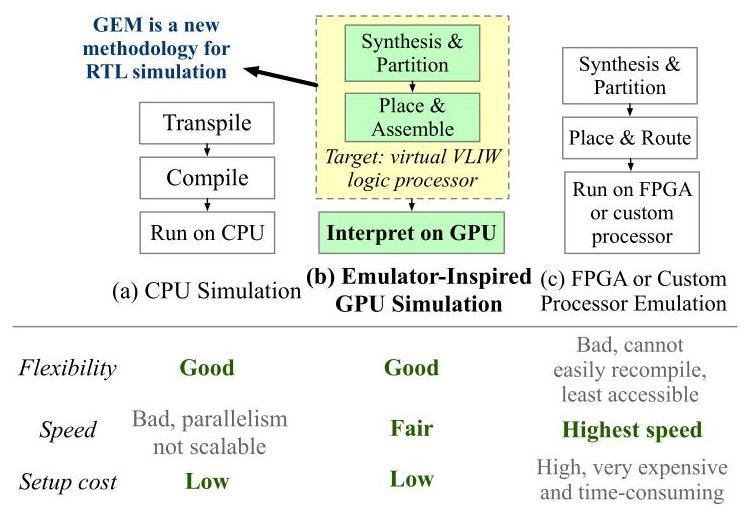
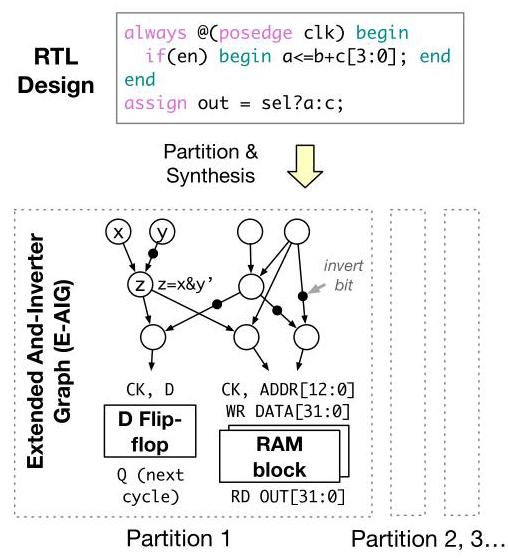
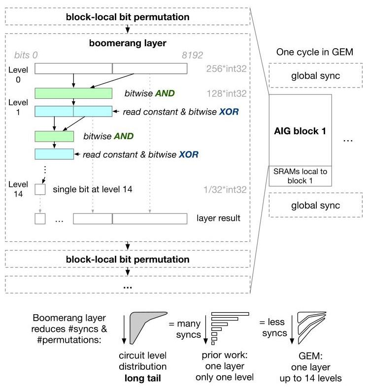
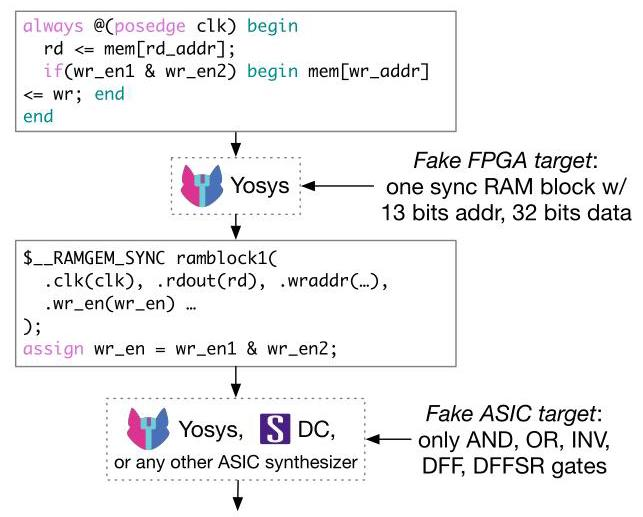
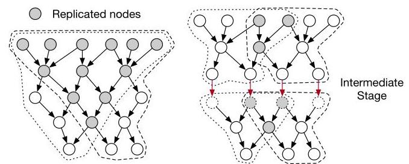
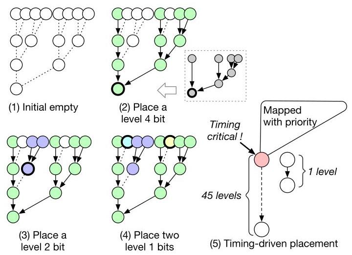
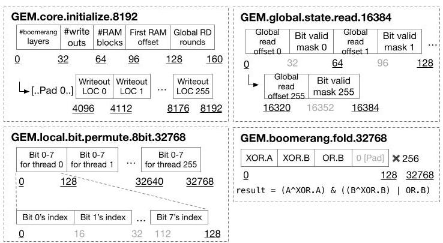

GEM: GPU-Accelerated Emulator-Inspired RTL Simulation
Zizheng Guo \({}^{1,3, \dagger }\) , Yanqing Zhang \({}^{2}\) , Runsheng Wang \({}^{1,3,4}\) , Yibo Lin \({}^{1,3,4}\) , Haoxing Ren \({}^{2}\)
郭子正 \({}^{1,3, \dagger }\) ，张彦青 \({}^{2}\) ，王润生 \({}^{1,3,4}\) ，林一博 \({}^{1,3,4}\) ，任浩星 \({}^{2}\)
\({}^{1}\) School of Integrated Circuits, Peking University \({}^{2}\) NVIDIA Corporation
\({}^{1}\) 北京大学集成电路学院 \({}^{2}\) NVIDIA公司
\({}^{3}\) Institute of EDA, Peking University \({}^{4}\) Beijing Advanced Innovation Center for Integrated Circuits
\({}^{3}\) 北京大学电子设计自动化 (EDA) 研究院 \({}^{4}\) 北京集成电路先进创新中心
{gzz, yibolin, r.wang}@pku.edu.cn, {yanqingz, haoxingr}@nvidia.com
{gzz, yibolin, r.wang}@pku.edu.cn, {yanqingz, haoxingr}@nvidia.com
Abstract-In this paper, we present a GPU-accelerated RTL simulator addressing critical challenges in high-speed circuit verification. Traditional CPU-based RTL simulators struggle with scalability and performance, and while FPGA-based emulators offer acceleration, they are costly and less accessible. Previous GPU-based attempts have failed to speed up RTL simulation due to the heterogeneous nature of circuit partitions, which conflicts with the SIMT (Single Instruction, Multiple Thread) paradigm of GPUs. Inspired by the design of emulators, our approach introduces a novel virtual Very Long Instruction Word (VLIW) architecture, designed for efficient CUDA execution. We also design a flow that maps circuit logic to the architecture in a process analogous to the FPGA CAD flow. This architecture mitigates issues of irregular memory access and thread divergence, unlocking GPU potential for RTL simulation. Our solution achieves up to \({64} \times\) speed-up over the best CPU simulators, democratizing high-speed RTL simulation with accessible hardware and establishing a new frontier for GPU-accelerated circuit verification.
摘要——本文提出了一种图形处理器 (GPU) 加速的寄存器传输级 (RTL) 仿真器，以应对高速电路验证中的关键挑战。传统基于中央处理器 (CPU) 的 RTL 仿真器在可扩展性和性能方面面临困难，而基于现场可编程门阵列 (FPGA) 的仿真器虽能提供加速，但成本高昂且可及性较低。此前基于 GPU 的尝试未能加速 RTL 仿真，原因在于电路划分 (circuit partition) 的异构性质与 GPU 的单指令多线程 (Single Instruction, Multiple Thread, SIMT) 范式相冲突。受仿真器设计的启发，我们的方法引入了一种新颖的虚拟超长指令字 (Very Long Instruction Word, VLIW) 架构，专为高效 CUDA 执行而设计。我们还设计了一种流程，将电路逻辑映射到该架构，其过程类似于 FPGA 计算机辅助设计 (CAD) 流程。该架构缓解了不规则内存访问 (irregular memory access) 和线程发散 (thread divergence) 问题，释放了 GPU 用于 RTL 仿真的潜力。我们的解决方案相比最佳 CPU 仿真器实现了高达 \({64} \times\) 的加速，利用易获取的硬件使高速 RTL 仿真大众化，并为 GPU 加速的电路验证开辟了新前沿。
I. INTRODUCTION
As design complexity of VLSI circuits scale aggressively, the complexity of verifying their functionality at the Register Tranfer Level (RTL) also rockets up. However, traditional CPU-based RTL simulators face scalability bottlenecks due to limited computation power, caches, and parallelism inside multi-core execution [1]. For large-scale designs, even high-performance CPU simulators struggle to deliver the speed necessary for rapid and iterative verification. Field Programmable Gate Array (FPGA)- and custom-processor-based emulation has emerged as a powerful solution to accelerate logic verification, achieving orders-of-magnitude speedup over CPU simulation [2], [3]. By leveraging parallelism inherent in hardware, emulators can validate large designs more efficiently than software-based simulators. Despite their advantages, FPGA- and custom-processor-based emulators [4], [5] are costly in terms of both financial costs and setup time, limiting their accessibility and adaptability. With these barriers, GPU-accelerated simulation has the potential to offer a compelling alternative, given GPUs' high degree of parallelism, availability, and versatility. Yet, despite the evident advantages, GPUs are rarely used for simulation due to specific architectural challenges.
随着超大规模集成电路 (Very Large Scale Integration, VLSI) 的设计复杂度急剧增长，在寄存器传输级 (Register Transfer Level, RTL) 验证其功能的复杂度也急剧上升。然而，传统的基于中央处理器 (Central Processing Unit, CPU) 的 RTL 模拟器 (simulator) 由于计算能力、缓存以及多核执行内部并行性有限，面临可扩展性瓶颈 [1]。对于大规模设计，即使是高性能 CPU 模拟器也难以提供快速且迭代式验证所需的速度。基于现场可编程门阵列 (Field Programmable Gate Array, FPGA) 和定制处理器的仿真 (emulation) 已成为加速逻辑验证的强大解决方案，相比 CPU 模拟实现了数量级的加速 [2], [3]。通过利用硬件固有的并行性，仿真器 (emulator) 能够比基于软件的模拟器更高效地验证大规模设计。尽管具有优势，基于 FPGA 和定制处理器的仿真器 [4], [5] 在资金成本和设置时间方面都很昂贵，限制了其可及性和适应性。鉴于这些障碍，图形处理器 (Graphics Processing Unit, GPU) 加速的模拟 (simulation) 有潜力提供一种引人注目的替代方案，因为 GPU 具有高度并行性、可用性和通用性。然而，尽管优势明显，由于特定的架构挑战，GPU 很少被用于模拟。
The barriers to GPU-based simulation arise from fundamental differences between circuit characteristics and GPU architectures. First, GPUs operate under a Single Instruction, Multiple Thread (SIMT) model where threads execute the same instructions in lockstep, which is optimal for workloads with homogeneous parallelism. In contrast, digital circuits are inherently heterogeneous; each circuit partition can have a unique graph structure and functional requirements that challenge SIMT compatibility [6]. Although prior work has sought to make circuits GPU-compatible by mapping them into LUT-based gate level structures [7], [8], [9], [10], [11], [12], this approach falls short in performance compared with highly optimized CPU simulators. Additionally, some GPU-based methods simulate multiple independent testbenches in parallel [13]. While this strategy improves simulation throughput, it cannot help in reducing latency which is critical for rapid turnaround in iterative design cycles.
基于 GPU 的仿真障碍源于电路特性与 GPU 架构之间的根本差异。首先，GPU 在单指令多线程 (Single Instruction, Multiple Thread, SIMT) 模型下运行，其中线程以锁步 (lockstep) 方式执行相同指令，这对于具有同质并行 (homogeneous parallelism) 的工作负载而言是最优的。相比之下，数字电路本质上是异构的 (heterogeneous)；每个电路分区 (circuit partition) 可能具有独特的图结构和功能需求，这对 SIMT 兼容性构成挑战 [6]。尽管已有工作试图通过将电路映射为基于查找表 (LUT) 的门级结构 [7], [8], [9], [10], [11], [12] 来使电路 GPU 兼容，但与高度优化的 CPU 模拟器相比，该方法在性能上仍有不足。此外，一些基于 GPU 的方法并行仿真多个独立测试平台 (testbench) [13]。虽然该策略提高了仿真吞吐量 (throughput)，但它无助于降低延迟 (latency)，而延迟对于迭代设计周期中的快速周转 (rapid turnaround) 至关重要。

Fig. 1: GEM is a new, emulator-inspired methodology for flexible, fast, and low setup cost RTL simulation.
图 1：GEM 是一种全新的、受仿真器启发 (emulator-inspired) 的方法论，用于灵活、快速且低搭建成本的 RTL 仿真。
Another challenge lies in the irregular nature of circuit graphs, which complicates efficient data access on GPUs. GPU memory systems are optimized for throughput, relying on coalesced and regular memory accesses to achieve peak efficiency. However, circuit graphs are sparse and irregular, causing frequent irregular memory accesses that degrade GPU performance. These factors have, until now, prevented GPUs from being viable platforms for efficient, low-latency circuit simulation.
另一个挑战在于电路图 (circuit graph) 的不规则性，这使 GPU 上的高效数据访问变得复杂。GPU 内存系统 (GPU memory system) 针对吞吐量 (throughput) 进行了优化，依赖合并且规整的内存访问 (coalesced and regular memory accesses) 来实现峰值效率 (peak efficiency)。然而，电路图是稀疏且不规则的，会导致频繁的不规则内存访问，从而降低 GPU 性能。迄今为止，这些因素一直使 GPU 无法成为高效、低延迟电路仿真 (circuit simulation) 的可行平台。
In this work, we propose a GPU-accelerated RTL simulator, GEM, that overcomes these challenges and redefines the potential of GPU-based circuit verification. The major contributions are summarized as follows.
在这项工作中，我们提出了一种 GPU 加速的 RTL 模拟器 GEM，它克服了这些挑战，并重新定义了基于 GPU 的电路验证的潜力。主要贡献总结如下。
1) Rather than simulating circuits using LUT-based methods, we introduce a technique that maps circuit logic into a specialized virtual Boolean processor with a Very Long Instruction Word (VLIW) architecture, optimized for execution on CUDA-compatible GPUs. This innovative architecture allows us to fully utilize the GPU threads even for irregular circuit structures and enabling coalesced memory accesses that are critical to high-performance GPU operation.
1) 我们不是使用基于查找表 (LUT) 的方法来仿真电路，而是引入一种技术，将电路逻辑映射到一种专门的虚拟布尔处理器 (virtual Boolean processor)，该处理器具有超长指令字 (VLIW) 架构，并针对在兼容 CUDA 的 GPU 上执行进行了优化。这种创新架构使我们即使对于不规则电路结构也能充分利用 GPU 线程，并实现对于高性能 GPU 运行至关重要的合并内存访问 (coalesced memory accesses)。
2) We design a mapping flow from RTL to our virtual VLIW architecture that mimics the partitioning, synthesis, and physical design flow of hardware, enabling us to interpret the circuit functionality on GPU in a way similar to the computer-aided design (CAD) flow for FPGAs.
2) 我们设计了一种从 RTL 到我们的虚拟 VLIW 架构的映射流程，该流程模仿硬件的划分、综合与物理设计流程，使我们能够以类似于面向 FPGA 的计算机辅助设计 (CAD) 流程的方式，在 GPU 上解释电路功能。
3) In our mapping flow, we address various critical challenges on simulation performance by designing a set of novel algorithms, including (i) deep long-tailed logic mapping that minimizes synchronization, (ii) RAM mapping and depth-optimized extended AIG synthesis, (iii) width-constrained replication-efficient partitioning, and (iv) iterative timing-driven bit placement.
3) 在我们的映射流程 (mapping flow) 中，我们通过设计一组新颖算法来应对仿真性能 (simulation performance) 方面的各种关键挑战，包括 (i) 深度长尾逻辑映射 (deep long-tailed logic mapping)，可最小化同步 (synchronization)；(ii) RAM 映射 (RAM mapping) 与深度优化的扩展 AIG 综合 (depth-optimized extended AIG synthesis)；(iii) 宽度受限的复制高效划分 (width-constrained replication-efficient partitioning)；以及 (iv) 迭代时序驱动的位放置 (iterative timing-driven bit placement)。
\({}^{ \dagger }\) This work was conducted during an internship at NVIDIA.
\({}^{ \dagger }\) 本工作是在 NVIDIA 实习期间完成的。
Our GPU-accelerated simulator achieves a remarkable \({38} \times\) and \({64} \times\) speed-up compared to a leading commercial tool and Verilator, respectively. This substantial performance improvement validates our approach, demonstrating a successful use of GPUs in delivering RTL simulation speed-up. GEM offers a paradigm shift in GPU-based circuit verification, with potential applications extending into areas such as hardware-software co-design and rapid prototyping. Furthermore, this software-based method democratizes high-speed RTL simulation by making it accessible on readily available and relatively inexpensive GPU hardware, bringing high-speed simulation to a broader audience of designers and researchers. To this end, we made GEM open source under a permissive Apache license \({}^{1}\) .
我们的 GPU 加速模拟器 (GPU-accelerated simulator) 相较于领先的商业工具 (commercial tool) 和 Verilator，分别实现了显著的 \({38} \times\) 和 \({64} \times\) 加速。这一显著的性能提升验证了我们的方法，展示了成功利用 GPU 来实现 RTL 仿真 (RTL simulation) 加速。GEM 为基于 GPU 的电路验证 (circuit verification) 带来了范式转变，其潜在应用还可延伸至软硬件协同设计 (hardware-software co-design) 和快速原型 (rapid prototyping) 等领域。此外，这种基于软件的方法通过在现成且相对廉价的 GPU 硬件 (GPU hardware) 上提供高速 RTL 仿真 (high-speed RTL simulation)，使其得以普及，从而将高速仿真带给更广泛的设计师和研究人员群体。为此，我们以宽松的 Apache 许可证 (Apache license) 将 GEM 开源 \({}^{1}\)。
II. PRELIMINARY
In digital circuit design, simulation and emulation serve as crucial processes for verifying and evaluating functionality before hardware manufacturing. Both approaches typically work in two stages: compilation and execution.
在数字电路设计 (digital circuit design) 中，仿真 (simulation) 与模拟 (emulation) 是在硬件制造 (hardware manufacturing) 之前验证和评估功能的关键过程。这两种方法通常都分为两个阶段进行：编译 (compilation) 和执行 (execution)。
- In the compilation stage, the behavioral RTL netlist, represented in languages such as Verilog or SystemVerilog, is processed and transformed into an executable simulator. This simulator models the circuit behavior, either in software or as a hardware-mapped design, which will then be used to execute various test scenarios.
- 在编译阶段 (compilation stage)，以 Verilog 或 SystemVerilog 等语言表示的行为级 RTL 网表 (behavioral RTL netlist) 会被处理并转换为可执行模拟器 (executable simulator)。该模拟器会对电路行为 (circuit behavior) 进行建模，既可以以软件形式实现，也可以作为硬件映射设计 (hardware-mapped design) 实现，随后将被用于执行各种测试场景 (test scenarios)。
- The execution stage involves running the compiled simulator with specific input stimuli, provided as waveforms or recorded signal patterns (e.g., VCD or FSDB format). The simulator or emulator responds to these stimuli, producing output that reveals the circuit's expected behavior, helping designers validate functionality across test cases.
- 执行阶段 (execution stage) 涉及使用特定输入激励 (input stimuli) 运行编译后的模拟器 (compiled simulator)，这些激励以波形 (waveforms) 或记录信号模式 (recorded signal patterns) 的形式提供（例如，VCD 或 FSDB 格式）。模拟器 (simulator) 或仿真器 (emulator) 响应这些激励，产生输出，从而揭示电路 (circuit) 的预期行为 (expected behavior)，帮助设计人员 (designers) 跨测试用例 (test cases) 验证功能。
One key performance metric for evaluating simulators and emulators is the simulation speed, commonly measured in simulated cycles per second or Hertz (Hz). Depending on the underlying methodology, simulators are typically categorized as either oblivious/full-cycle simulators or event-based simulators [1].
评估仿真器 (simulator) 和仿真器 (emulator) 的一个关键性能指标是仿真速度，通常以每秒仿真周期数或赫兹 (Hz) 来衡量。根据底层方法的不同，仿真器通常被归类为 oblivious/全周期仿真器 (oblivious/full-cycle simulator) 或事件驱动仿真器 (event-based simulator) [1]。
- Full-cycle simulators process the entire circuit in each simulation cycle, regardless of whether specific parts of the circuit experience any activity. This approach is suitable for high-throughput FPGA-based emulators because the process is consistent across cycles.
- 全周期模拟器 (Full-cycle simulators) 在每个仿真周期中处理整个电路，无论电路的特定部分是否发生任何活动。这种方法适用于高吞吐量、基于 FPGA 的仿真器 (FPGA-based emulators)，因为该过程在各周期中保持一致。
- Conversely, event-based simulators, typically CPU-based, are optimized for efficiency by selectively updating only the circuit elements that are actively switching or affected by input changes in each cycle. This selective processing can save significant computation time when only parts of the circuit change, but it is generally slower than hardware-accelerated full-cycle methods.
- 相反，基于事件的模拟器 (event-based simulators) 通常基于 CPU (CPU-based)，通过选择性地仅更新每个周期中正在活跃翻转或受输入变化影响的电路元件 (circuit elements) 来优化效率。当电路中只有部分发生变化时，这种选择性处理 (selective processing) 可以节省大量计算时间，但通常比硬件加速的全周期方法 (hardware-accelerated full-cycle methods) 更慢。
Previous work in logic emulation and simulation has explored various hardware and software platforms, each with distinct advantages and limitations. FPGA- or custom-processor-based emulation is known for its impressive performance, often achieving emulation speeds of \(1\mathrm{{MHz}}\) or more [4],[5]. However, the significant cost of dedicated FPGA hardware and the extensive compilation times make this approach less accessible and time-efficient for iterative design workflows. For example, it can take days to compile a design into a FPGA-based emulator. In contrast, CPU-based simulators offer flexibility and ease of setup but are generally slow, often failing to scale well with increasing circuit complexity.
先前关于逻辑仿真 (logic emulation) 和模拟 (simulation) 的工作已经探索了各种硬件与软件平台，每种平台都有各自的优势和局限。基于现场可编程门阵列 (FPGA) 或定制处理器 (custom processor) 的仿真 (emulation) 以其令人瞩目的性能而闻名，通常能达到 \(1\mathrm{{MHz}}\) 或更高的仿真速度 [4],[5]。然而，专用 FPGA 硬件的高昂成本以及漫长的编译时间，使这种方法在迭代式设计工作流程中难以普及且时间效率不高。例如，将设计编译到基于 FPGA 的仿真器 (emulator) 中可能需要数天。相比之下，基于中央处理器 (CPU) 的模拟器 (simulator) 具有灵活性和易于搭建的优点，但通常速度较慢，并且往往无法随着电路复杂度的增加而良好扩展。
Efforts to parallelize CPU-based simulators, primarily through circuit partitioning, the Chandy-Misra-Bryant (CMB) algorithm, and dataflow optimization [14], [15], [16], [17], have met with only moderate success. Although these approaches can exploit multicore CPUs, they face significant bottlenecks: the CPU frontend often becomes overwhelmed by the sheer volume of compiled circuit code, and parallelism is constrained by the limited memory bandwidth in standard multicore CPUs, capping the potential performance gains.
将基于 CPU 的模拟器并行化的努力，主要借助电路划分 (circuit partitioning)、Chandy-Misra-Bryant (CMB) 算法以及数据流优化 (dataflow optimization) [14], [15], [16], [17]，仅取得了中等程度的成功。尽管这些方法能够利用多核 CPU (multicore CPUs)，但它们面临显著瓶颈：CPU 前端 (CPU frontend) 常因海量编译后的电路代码 (compiled circuit code) 而不堪重负，而并行度又受限于标准多核 CPU (standard multicore CPUs) 中有限的内存带宽 (memory bandwidth)，从而限制了潜在的性能提升 (performance gains)。
Efforts to leverage GPU's data parallelism for logic simulation have aimed to address the performance gap but have generally been confined to gate-level simulation using lookup-table-based methods [7], [8], [9], [10], [11], [12]. This approach relies on GPU threads querying precomputed truth tables, which align with the SIMT architecture of GPUs. However, this method presents serious limitations: gate-level simulations are typically much slower (10- \({100} \times )\) than RTL-level simulations, as the latter operate on a higher abstraction level. Consequently, while previous GPU-based methods show promise at the gate level, they fail to match the performance needed for practical RTL verification tasks.
利用 GPU 的数据并行性 (data parallelism) 进行逻辑仿真 (logic simulation) 的努力旨在弥合性能差距 (performance gap)，但通常局限于使用基于查找表 (lookup-table) 的方法进行的门级仿真 (gate-level simulation) [7], [8], [9], [10], [11], [12]。这种方法依赖于 GPU 线程 (GPU thread) 查询预计算的真值表 (truth table)，这与 GPU 的 SIMT 架构 (SIMT architecture) 相符。然而，这种方法存在严重局限：门级仿真通常比 RTL 级仿真 (RTL-level simulation) 慢得多 (10- \({100} \times )\)，因为后者在更高的抽象层次 (abstraction level) 上运行。因此，尽管先前基于 GPU 的方法在门级展现出潜力，但它们无法达到实际 RTL 验证任务 (RTL verification task) 所需的性能。
Another line of GPU-accelerated simulation instead transpiles RTL directly to CUDA code. As this results in SIMT-incompatible GPU kernels, they either choose to forfeit data parallelism completely [6] or use independent workloads to fill the data parallelism dimension [13]. These methods require special inputs such as independent stimulis or simple blocking RTL code and are thus not good at reducing simulation latency which is critical in verification turnaround.
另一条 GPU 加速仿真 (GPU-accelerated simulation) 路线则是将 RTL 直接转译 (transpile) 为 CUDA 代码。由于这会产生与 SIMT 不兼容的 GPU 内核 (GPU kernels)，它们要么选择完全放弃数据并行 (data parallelism) [6]，要么使用独立工作负载 (independent workloads) 来填充数据并行维度 [13]。这些方法需要独立激励 (independent stimulis) 或简单阻塞式 RTL 代码等特殊输入，因此不擅长降低仿真延迟 (simulation latency)，而仿真延迟在验证周转 (verification turnaround) 中至关重要。
III. ALGORITHM
We present a novel GPU-accelerated RTL simulator, GEM, that addresses the fundamental mismatch between circuit simulation and GPU architecture. Our core idea is a virtual Boolean processor that acts as a reconfigurable and highly-parallel container of Boolean logic. This virtual Boolean processor is programmed with a VLIW instruction set, and is designed to fit GPU parallelism. Specifically, its bitstream can be interpreted using high performance GPU kernels on a CUDA-compatible GPU. Section III-A describes the key motivation behind the design of this architecture and how it solves the SIMT and memory access challenges. To map any input RTL design to the virtual Boolean processor, we design a process containing synthesis (Section III-B), partitioning (Section III-C), physical design (Section III-D), and finally bitstream generation and interpretation (Section III-E). This flow has a beautiful analogy to the CAD flow of FPGAs.
我们提出了一种新颖的 GPU 加速的 RTL 仿真器 (GPU-accelerated RTL simulator) GEM，它解决了电路仿真与 GPU 架构之间的根本性不匹配问题。我们的核心思想是一个虚拟布尔处理器 (virtual Boolean processor)，它充当布尔逻辑 (Boolean logic) 的可重构且高度并行的容器。该虚拟布尔处理器使用 VLIW 指令集 (VLIW instruction set) 进行编程，并旨在适配 GPU 并行性 (GPU parallelism)。具体而言，其比特流 (bitstream) 可以在兼容 CUDA 的 GPU 上使用高性能 GPU 内核 (GPU kernel) 进行解释。第 III-A 节描述了该架构设计背后的关键动机，以及它如何解决 SIMT 和内存访问挑战 (memory access challenges)。为了将任意输入 RTL 设计映射到该虚拟布尔处理器，我们设计了一个流程，包含综合 (synthesis)（第 III-B 节）、划分 (partitioning)（第 III-C 节）、物理设计 (physical design)（第 III-D 节），以及最后的比特流生成与解释 (bitstream generation and interpretation)（第 III-E 节）。该流程与 FPGA 的 CAD 流程 (CAD flow) 有着美妙的类比。
A.A Virtual Boolean Machine
GEM introduces a GPU-friendly virtual Boolean machine that is critical in bridging the gap between circuit functionality and GPU execution. Following are our key observations that lead to its design.
GEM 引入了一种对 GPU 友好的虚拟布尔机 (virtual Boolean machine)，这对于弥合电路功能与 GPU 执行之间的鸿沟至关重要。以下是引导其设计的关键观察。
Observation 1. Every Boolean function can be implemented using only a fixed set of operators. Such an operator set is called functional complete. For example, {AND, INVERT} is a functional complete operator set. By compiling the logic into an intentionally limited set of operators, we can use GPU's built-in logic instructions to execute them, instead of having to query look-up tables from memory.
观察 1. 每个布尔函数 (Boolean function) 都可以仅使用一组固定的算子 (operator) 来实现。这样的算子集 (operator set) 称为功能完备 (functional complete)。例如，{AND, INVERT} 是一个功能完备的算子集。通过将逻辑编译为一组有意受限的算子，我们可以使用 GPU 的内置逻辑指令来执行它们，而不必从内存中查询查找表 (look-up table)。
Observation 2. Irregular memory access is inherently unavoidable due to the heterogeneous nature of general circuit graph. However, irregular access inside GPU shared memory (only accessible by a local thread block) is much less costly than irregular global memory access. Rearranging the simulation so that most irregular accesses happen locally inside a thread block will thus help greatly in reducing memory overhead.
观察 2。由于通用电路图 (general circuit graph) 的异构特性 (heterogeneous nature)，不规则内存访问 (irregular memory access) 本质上是不可避免的。然而，GPU 共享内存 (GPU shared memory) 内部的不规则访问（仅可由本地线程块 (thread block) 访问）的成本远低于不规则全局内存访问 (irregular global memory access)。因此，重新安排仿真 (simulation)，使大多数不规则访问都发生在本地线程块 (thread block) 内部，将极大地有助于降低内存开销 (memory overhead)。
\({}^{1}\) https://github.com/NVlabs/GEM
\({}^{1}\) https://github.com/NVlabs/GEM
Based on Observations 1-2, our modeling of simulation is shown in Figure 2. We regard the general simulation task as a set of logic partitions, each in a reasonable size that can be handled with one Boolean processor core (i.e., one GPU thread block). Inside each partition there is an extended and-inverter graph (E-AIG) with AND gates, INVERT gates, D flip-flops (FFs), and RAM blocks. E-AIG can efficiently represent any synthesizable circuit with combinational and synchronous sequential logic. We note that although RAM blocks can be polyfilled using only FFs and decoder logic, this process is extremely costly for large RAMs and thus we introduce native support to RAM blocks in E-AIG.
基于观察 1-2，我们的仿真建模如图 2 所示。我们将一般仿真任务视为一组逻辑分区 (logic partitions)，每个逻辑分区的大小合理，可由一个布尔处理器核 (Boolean processor core) 处理（即一个 GPU 线程块 (GPU thread block)）。每个分区内部有一个扩展与反相图 (Extended And-Inverter Graph, E-AIG)，其中包含与门 (AND gate)、反相门 (INVERT gate)、D 触发器 (D flip-flop, FF) 和 RAM 块 (RAM block)。E-AIG 能高效表示任何具有组合逻辑和同步时序逻辑 (combinational and synchronous sequential logic) 的可综合电路。我们注意到，尽管 RAM 块可以仅使用 FF 和解码器逻辑 (decoder logic) 来填充实现，但该过程对于大型 RAM 极其昂贵，因此我们在 E-AIG 中引入了对 RAM 块的原生支持 (native support)。

Fig. 2: GEM regards every RTL design as a set of partitions. Each partition is an extended and-inverter graph (E-AIG).
图 2：GEM 将每个 RTL 设计视为一组分区 (partition)。每个分区都是一个扩展与反相图 (E-AIG)。
Inside the E-AIG, most of the computation lies in the combinational logic AIG. Our Boolean processor should support efficient execution of AIGs by exploiting the simplicity of gate choices and the common AIG properties.
在 E-AIG 内部，大部分计算位于组合逻辑 AIG 中。我们的布尔处理器 (Boolean processor) 应利用门选择的简单性和 AIG 的常见特性，支持 AIG 的高效执行。
Observation 3. In addition to thread-level parallelism, word-level parallelism can provide orders-of-magnitude more logic processing power. For example, suppose a, b, c are three 32-bit unsigned integers, calculating \(r =\) (a AND b) XOR c is performing 32 And-then-Invert instructions in parallel using a, b as inputs and \(\mathrm{C}\) as a constant that encodes whether to flip each resulting bit.
观察 3。除了线程级并行 (thread-level parallelism)，字级并行 (word-level parallelism) 还可以提供高出几个数量级的逻辑处理能力。例如，假设 a、b、c 是三个 32 位无符号整数，计算 \(r =\) (a AND b) XOR c 就是使用 a、b 作为输入，并使用 \(\mathrm{C}\) 作为编码是否翻转每个结果位的常量，并行执行 32 条与后取反 (And-then-Invert) 指令。
Observation 4. The logic depth of an AIG can be 50-100 for common circuits. However, the gate distribution among the logic levels is extremely imbalanced. A large portion of the gates reside in a few frontier levels whereas only a few gates are accountable for the rest of the levels. We call this the long-tailed nature of circuit graphs.
观察 4. 对于常见电路 (common circuits)，AIG 的逻辑深度 (logic depth) 可以为 50-100。然而，门 (gate) 在逻辑层级 (logic levels) 之间的分布极不均衡。很大一部分门 (gate) 位于少数前沿层级 (frontier levels) 中，而其余层级仅由少数门 (gate) 构成。我们将电路图 (circuit graphs) 的这种性质称为长尾特性 (long-tailed nature)。
Levelization-based GPU algorithms are frequently used to process circuit graph. They divide the circuit into a series of logic levels each containing a batch of independent calculations. Between two consecutive logic levels, there needs to be a bulk synchronization and a permutation to align the level outputs with the next-level's inputs. As a result, Observation 4 turns out to be very harmful because it leaves most of the levels underutilized and incurs large synchronization overhead. In light of Observations 3-4, we propose a boomerang-shaped executor layer as shown in Figure 3. It is the central reconfigurable logic executor in each virtual Boolean processor core, consisting of interleaved bit permutations and boomerang layers. The virtual Boolean processor core maintains up to 8,192 bits of circuit states. Inside each boomerang layer, the 8,192 bits are recursively folded using bitwise AND and then bitwise XOR with an external constant. The fold is repeated by 14 times until we get a single bit. It can be observed that even a single boomerang layer is able to simulate up to 14 levels of logic. Their shape also fits nicely with the long-tailed nature of circuit graph. Experimentally, boomerang layer reduces the number of bit permutations and synchronizations inside a GPU thread block by more than \(5 \times\) .
基于分级化 (levelization) 的 GPU 算法常用于处理电路图 (circuit graph)。它们将电路划分为一系列逻辑级 (logic level)，每一级包含一批独立计算。在两个连续逻辑级之间，需要进行批量同步 (bulk synchronization) 和置换 (permutation)，以将本级输出与下一级的输入对齐。因此，观察 4 被证明非常有害，因为它使大多数逻辑级未被充分利用，并导致大量同步开销。鉴于观察 3-4，我们提出了一种如图 3 所示的回旋镖形执行器层 (boomerang-shaped executor layer)。它是每个虚拟布尔处理器核 (virtual Boolean processor core) 中的中央可重构逻辑执行器 (central reconfigurable logic executor)，由交织的位置换 (bit permutation) 和回旋镖层 (boomerang layer) 组成。虚拟布尔处理器核维护最多 8,192 位的电路状态 (circuit state)。在每个回旋镖层内部，这 8,192 位使用按位与 (bitwise AND) 递归折叠，然后与外部常量进行按位异或 (bitwise XOR)。该折叠重复 14 次，直到得到单个位。可以观察到，即使单个回旋镖层也能够模拟多达 14 级逻辑。它们的形状也与电路图 (circuit graph) 的长尾特性 (long-tailed nature) 很好地契合。实验上，回旋镖层将 GPU 线程块 (thread block) 内的位置换和同步次数减少了超过 \(5 \times\)。

Fig. 3: The boomerang-shaped executor layer in GEM can greatly reduce the number of bit permutations and synchronizations for deep and long-tailed logic.
图 3：GEM 中的回旋镖形执行器层 (boomerang-shaped executor layer) 可以大大减少深层长尾逻辑 (deep and long-tailed logic) 的位排列 (bit permutation) 和同步 (synchronization) 次数。
B. Synthesis
To compile an RTL design for GEM execution, our first step is to map it to the E-AIG format. While AIG is a widely used format in logic synthesis research, there is no existing flow that synthesizes RTL to extended AIG with clocked FFs and RAM blocks. The main challenges are two fold: (1) The behavioral RAM constructs in RTL netlist need to be identified and mapped to our fixed RAM block type (13 bits address and 32 bits data) to minimize thread divergence. For a general RAM in RTL, multiple such RAM blocks need to be instantiated and adapter logics need to be introduced automatically. (2) As we will show in later sections, our simulator requires high-quality synthesis results in order to execute efficiently. Specifically, we require the depth of AIG to be as low as possible.
为了将 RTL 设计编译到 GEM 上执行，我们的第一步是将其映射到 E-AIG 格式。尽管 AIG 是逻辑综合 (logic synthesis) 研究中广泛使用的格式，但目前尚无现有流程能将 RTL 综合为带时钟 FF (clocked FF) 和 RAM 块的扩展 AIG (extended AIG)。主要挑战有两个方面：(1) RTL 网表 (netlist) 中的行为级 RAM 构造 (behavioral RAM construct) 需要被识别并映射到我们固定的 RAM 块 (RAM block) 类型（13 位地址和 32 位数据），以最小化线程发散 (thread divergence)。对于 RTL 中的通用 RAM (general RAM)，需要实例化多个这样的 RAM 块，并自动引入适配器逻辑 (adapter logic)。(2) 正如我们将在后续章节中展示的那样，我们的模拟器 (simulator) 需要高质量的综合结果 (synthesis result) 才能高效执行。具体而言，我们要求 AIG 的深度 (depth) 尽可能低。
To meet the above requirements, we develop a synthesis flow that exploits two existing synthesis flows for FPGA and ASIC, as shown in Figure 4. We use open-source Yosys synthesizer [18] to deal with RAM mapping. We create a fake FPGA target platform and define our available RAM block. Yosys will take the definition and handle the RAM mapping. Then without further LUT mapping, we can write out the intermediate RTL netlist that only has the RAMs mapped. Next, we handle the RAM-mapped RTL with another ASIC synthesis flow. This time we give the synthesizer a fake ASIC library that only contains AND, OR, INV, and FF gates. This fake library has a simple timing model that defines AND and OR gate delays as 1ps and INV gates as 0ps. Timing-driven synthesis is thus equivalent to depth optimization. In our experiments, we found commercial ASIC synthesizers outperform Yosys in this second step.
为满足上述需求，我们开发了一种综合流程 (synthesis flow)，它利用了两种已有的面向 FPGA 和 ASIC 的综合流程，如图4所示。我们使用开源 Yosys 综合器 [18] 来处理 RAM 映射 (RAM mapping)。我们创建一个虚拟的 FPGA 目标平台，并定义我们可用的 RAM 块 (RAM block)。Yosys 将采用该定义并处理 RAM 映射。然后，在不进行进一步的 LUT 映射 (LUT mapping) 的情况下，我们可以写出仅映射了 RAM 的中间 RTL 网表 (RTL netlist)。接下来，我们用另一种 ASIC 综合流程 (ASIC synthesis flow) 处理已完成 RAM 映射的 RTL。这一次，我们给综合器一个仅包含 AND、OR、INV 和 FF 门的虚拟 ASIC 库 (ASIC library)。该虚拟库有一个简单的时序模型 (timing model)，将 AND 和 OR 门的延迟定义为 1ps，将 INV 门定义为 0ps。因此，时序驱动综合 (timing-driven synthesis) 等价于深度优化 (depth optimization)。在我们的实验中，我们发现商用 ASIC 综合器 (commercial ASIC synthesizers) 在第二步中优于 Yosys。

Gate-level Verilog represented E-AIG
门级 (gate-level) Verilog 表示得到的 E-AIG
Fig. 4: We exploit existing FPGA and ASIC synthesis flows to efficiently transform RTL design into E-AIG.
图 4：我们利用现有的 FPGA 和 ASIC 综合流程，将 RTL 设计高效地转换为 E-AIG。
C. Partitioning
Partitioning the hardware to multiple Boolean processor cores is a crucial step in our simulator because it ensures locality for data movement. As GPUs do not have efficient inter-block communication, we should ideally make partitions independent of each other and only communicate once per simulated cycle. The goal is made possible with a recent CPU-based parallel simulator RepCut [17], whose basic idea is to allow some duplicated logic in order to remove inter-partition dependency. To adapt the idea to a GPU simulator, we face two new challenges.
将硬件划分 (partitioning) 到多个布尔处理器核心 (Boolean processor cores) 是我们模拟器中的关键步骤，因为它确保了数据移动的局部性 (locality)。由于 GPU 不具备高效的块间通信 (inter-block communication)，理想情况下，我们应使各分区彼此独立，并且每个模拟周期 (simulated cycle) 只通信一次。近期基于 CPU 的并行模拟器 (parallel simulator) RepCut [17] 使这一目标成为可能，其基本思想是允许一些重复逻辑 (duplicated logic)，以消除分区间的依赖 (inter-partition dependency)。要将这一思想适配到 GPU 模拟器 (GPU simulator)，我们面临两个新挑战。
Firstly, the number of GPU thread blocks is much larger than the number of CPU cores. However, the replication cost (i.e., the relative size of duplicated logic over the original circuit size) grows quickly with the increased granularity of partitions. For example, RepCut [17] reports that only 1.30% cost is needed to partition a design into 8 threads, but the cost rises to 10.95% when 48 threads are used. In our experiments, we found this cost quickly surges to over 200% when we have to partition a design into 216 blocks, which is a minimal requirement to fully utilize a modern GPU.
首先，GPU 线程块 (thread block) 的数量远多于 CPU 核心 (CPU core) 的数量。然而，复制成本 (replication cost)（即重复逻辑 (duplicated logic) 相对于原始电路规模 (original circuit size) 的相对大小）会随着分区粒度 (partition granularity) 的增大而快速上升。例如，RepCut [17] 报告称，将设计 (design) 划分为 8 个线程 (thread) 仅需 1.30% 的成本，但当使用 48 个线程时，该成本会升至 10.95%。在我们的实验中，我们发现当必须将设计划分为 216 个块 (block) 时，该成本会迅速飙升至 200% 以上，而这是充分利用现代 GPU 的最低要求。
To scale RepCut to over 200 partitions, our solution is to extend it to multiple stages as shown in Figure 5. We cut the circuit graph at one or more levels in the middle. We treat the nodes at the cut level as endpoints and run RepCut separately for each stage. We found that with the cost of 1 additional synchronization, we reduce the replication cost from 200% to less than 3% when partitioning a 500K gates design into 216 blocks. For even larger designs, more stages might be needed but it is easy to strike a balance between synchronization and replication costs with heuristics.
为了将 RepCut 扩展到超过 200 个分区 (partitions)，我们的解决方案是将其扩展到多阶段 (multiple stages)，如图 5 所示。我们在中间的一个或多个层级 (levels) 上切割电路图 (circuit graph)。我们将切割层级 (cut level) 上的节点 (nodes) 视为端点 (endpoints)，并对每个阶段 (stage) 分别运行 RepCut。我们发现，以额外 1 次同步 (synchronization) 为代价，在将 500K 门 (gates) 设计分区为 216 个块 (blocks) 时，我们将复制成本 (replication cost) 从 200% 降低到低于 3%。对于更大的设计，可能需要更多阶段 (stages)，但借助启发式方法 (heuristics)，很容易在同步 (synchronization) 成本与复制 (replication) 成本之间取得平衡。
Secondly, the goal of partitioning to Boolean processors is different from the original RepCut, which aims at balancing the size of partitions. Instead, we require that all partitions are mappable to the boomerang-shaped executor layer. This effectively constrains the width (8192 bits, see Figure 3) instead of total size of partitions. It is difficult to modify a hypergraph partitioner's objective to logic widths as this metric does not have nice additive property. Instead, we make no change to the partitioner itself and keep the original size objective. We run an additional postprocessing algorithm after the partitioner to align the objectives to our logic width need. We show our idea in Algorithm 1, which is based on empirically trying to merge the resulting partitions after a round of excessive partitioning. After running the algorithm, it is easy to guarantee that each partition has at least 50% effective bit utilization.
其次，划分到布尔处理器 (Boolean processors) 的目标不同于原始 RepCut，后者旨在平衡各个分区 (partition) 的大小。相反，我们要求所有分区都可映射到回旋镖形执行器层 (boomerang-shaped executor layer)。这实际上约束的是宽度 (width)（8192 位，见图 3），而不是分区的总大小。很难将超图划分器 (hypergraph partitioner) 的目标修改为逻辑宽度 (logic width)，因为该指标不具备良好的可加性 (additive property)。因此，我们不对划分器本身做任何修改，并保留原始的大小目标。我们在划分器之后运行一个额外的后处理算法 (postprocessing algorithm)，以使目标与我们的逻辑宽度需求对齐。我们在算法 1 (Algorithm 1) 中展示了我们的想法，其基础是经验性地尝试在一轮过度划分 (excessive partitioning) 后合并得到的分区。运行该算法后，很容易保证每个分区具有至少 50% 的有效位利用率 (effective bit utilization)。

Fig. 5: By introducing one additional stage, the logic duplication of RepCut can be remarkably reduced, unlocking enough parallelism for GPU utilization.
图 5：通过引入一个额外的阶段，RepCut 的逻辑复制可以显著减少，从而释放出足够的并行性以供 GPU 利用。
Algorithm 1: Partition merging
算法 1：分区合并 (Partition merging)
1 Partition the design excessively so that each partition is
1 对设计进行过度划分，使得每个分区 (partition) 是
mappable;
for each partition \(p\) do
Sort other unvisited partitions by overlap size with \(p\) ;
按与 \(p\) 的重叠大小对其他未访问的分区 (partition) 进行排序；
for partition \(q\) with large-to-small overlap do
对于具有从大到小重叠的分区 (partition) \(q\) 执行
Try merging \(q\) with \(p\) , if the result is mappable,
尝试将 \(q\) 与 \(p\) 合并，如果结果可映射 (mappable)，
commit the merge;
D. Logic Placement
Given an E-AIG partition, our logic placement algorithm implements the logic onto a series of reconfigurable boomerang layers (Figure 3). Our objective is to map all AIG nodes while reducing the total number of boomerang layers required. In this section, we present an iterative timing-driven placement algorithm in GEM to map AIG to boomerang layers.
给定一个 E-AIG 分区 (partition)，我们的逻辑布局 (logic placement) 算法将该逻辑实现到一系列可重构 (reconfigurable) 的回旋镖 (boomerang) 层上（图 3）。我们的目标是在减少所需回旋镖 (boomerang) 层总数的同时，映射所有 AIG 节点 (node)。在本节中，我们提出 GEM 中的一种迭代 (iterative) 时序驱动 (timing-driven) 布局 (placement) 算法，用于将 AIG 映射到回旋镖 (boomerang) 层。
We show our basic idea of bit mapping in Figure 6 using a 4- level small boomerang layer as an example. We start with an empty boomerang layer as Figure 6 (1). Then, we choose a bit from E-AIG at logic level 4 and map it to the empty slot in boomerang executor at level 4. To do so, we recursively map the inputs of the being-mapped bit to upper levels of the executor. In the worst case, the fan-in cone of the being-mapped bit forms a perfectly balanced binary tree, thus occupying all bits of a boomerang layer. However, such worst case never happens in practice, as most bits in AIG have a pair of inputs that reside in different logic levels (i.e., imbalanced). As a result, there leaves a lot of free space after mapping one bit, and such vacant bits can be used to map other bits as shown in Figure 6 (2)-(4).
我们在图 6 中以一个 4 级的小型回旋镖层 (boomerang layer) 为例展示了我们的比特映射 (bit mapping) 基本思想。我们从一个空的回旋镖层开始，如图 6 (1) 所示。然后，我们从 E-AIG 中选取位于逻辑级 (logic level) 4 的一个比特，并将其映射到回旋镖执行器 (boomerang executor) 第 4 级的空槽位 (empty slot) 中。为此，我们递归地将正在被映射的比特的输入映射到执行器的更高层级。在最坏情况下，正在被映射的比特的扇入锥 (fan-in cone) 会形成一棵完美平衡的二叉树 (perfectly balanced binary tree)，从而占满一个回旋镖层的所有比特。然而，这种最坏情况在实践中从未发生，因为 AIG 中的大多数比特都有一对位于不同逻辑级的输入（即不平衡）。因此，在映射一个比特后会留下大量空闲空间，并且这些空闲比特可用于映射其他比特，如图 6 (2)-(4) 所示。
Based on the above bit mapping primitive, we use Algorithm 2 to map a whole AIG partition into a series of boomerang layers. We iteratively try to map the fan-in frontier of current AIG subgraph into a new empty layer. After the layer is full, we remove the nodes that are already realized by current layers, create a new AIG subgraph of remaining nodes, and repeat the process until all nodes are mapped. We define timing criticality of a node as its logic depth on the reversed AIG subgraph. To reduce the number of layers, we prioritize the mapping of nodes on timing-critical paths (Figure 6 (5) and Algorithm 2 lines 7-8) according to the constantly updated timing criticality of nodes.
基于上述位映射原语 (bit mapping primitive)，我们使用算法 2 将整个 AIG 分区 (AIG partition) 映射为一系列回旋镖层 (boomerang layers)。我们迭代地尝试将当前 AIG 子图 (AIG subgraph) 的扇入前沿 (fan-in frontier) 映射到一个新的空层中。当该层已满后，我们移除当前各层已实现的节点，为剩余节点创建一个新的 AIG 子图 (AIG subgraph)，并重复该过程，直到所有节点都被映射。我们将节点的时序关键性 (timing criticality) 定义为其在反向 AIG 子图 (reversed AIG subgraph) 上的逻辑深度 (logic depth)。为减少层数，我们根据节点不断更新的时序关键性，优先映射时序关键路径 (timing-critical paths) 上的节点（图 6 (5) 和算法 2 第 7-8 行）。

Fig. 6: Example of a placement iteration (1)-(4) and illustration of timing-driven bit placement (5).
图 6：布局迭代 (1)-(4) 的示例以及时序驱动位布局 (5) 的示意。
Algorithm 2: Iterative multi-boomerang-layers mapping
算法 2：迭代式多回旋镖层映射 (Iterative multi-boomerang-layers mapping)
Input AIG;
Initialize node set frontier as input ports of the AIG;
将节点集合前沿 (node set frontier) 初始化为 AIG 的输入端口 (input ports)；
while AIG not all mapped do
Make a new empty boomerang layer;
创建一个新的空回旋镖层 (boomerang layer)；
for Level i in boomerang layer from bottom to top do
对于回旋镖层 (boomerang layer) 中从底到顶的每一层级 i，执行
while Level i is not full do
Update timing criticality (reverse logic depth) of
更新时序关键性 (timing criticality)（反向逻辑深度 (reverse logic depth)）的
the remaining AIG;
Choose the most timing-critical unmapped node
选择时序最关键 (timing-critical) 的未映射节点 (unmapped node)
in AIG with logic level \(i\) , and map it to the
在逻辑级 (logic level) 为 \(i\) 的 AIG 中，并将其映射到
boomerang layer;
Add the boomerang layer to the list of layers;
将回旋镖层 (boomerang layer) 添加到层列表中；
Update frontier to the input ports of the current
将前沿 (frontier) 更新为当前 (current) 的输入端口 (input ports)
unrealized AIG subgraph;
E. Bitstream Generation and CUDA Interpretation
The synthesized and placed circuit from previous sections are then transformed into a binary format that will be loaded and interpreted by our GEM CUDA kernel. In one way, this process is analogous to the bitstream generation of FPGA designs as we are encoding and serializing the wiring (boomerang layer setups) of a reconfigurable hardware. In another way, this process might also be called a binary assembler of software programs, as the resulting bitstream will be interpreted on a GPU by a software-only approach like inside a virtual machine.
前几节中综合 (synthesis) 并布局 (placement) 后的电路随后会被转换为一种二进制格式 (binary format)，该格式将由我们的 GEM CUDA 内核 (kernel) 加载并解释。一方面，这一过程类似于 FPGA 设计 (FPGA design) 的比特流生成 (bitstream generation)，因为我们正在对可重构硬件 (reconfigurable hardware) 的布线 (wiring)（回旋镖层 (boomerang layer) 设置）进行编码和序列化。另一方面，这一过程或许也可称为软件程序 (software program) 的二进制汇编器 (binary assembler)，因为得到的比特流 (bitstream) 将在 GPU 上通过一种纯软件方法 (software-only approach)，例如在虚拟机 (virtual machine) 内部，被解释执行。
We design a domain-specific instruction set architecture (ISA) for GEM to assemble the Boolean processor programs. This is a VLIW ISA that has 3 instruction length variations: 8192, 16384, and 32768 bit. It is designed for a GPU thread block with fixed 256 threads to load and interpret with high throughput. A 8192-bit GEM ISA instruction is loaded by 256 threads in lockstep by performing one coalesced 32-bit global memory read. For 16384- or 32768-bit instructions, 256 threads similarly perform a coalesced 64- or 128-
我们为 GEM 设计了一种领域特定指令集架构（ISA），用于汇编布尔处理器（Boolean processor）程序。这是一种超长指令字（VLIW）ISA，具有 3 种指令长度变体：8192、16384 和 32768 位。它面向具有固定 256 个线程的 GPU 线程块（thread block）设计，以高吞吐量进行加载和解释。一条 8192 位的 GEM ISA 指令由 256 个线程以锁步（lockstep）方式通过执行一次合并的 32 位全局内存（global memory）读取来加载。对于 16384 位或 32768 位指令，256 个线程类似地执行一次合并的 64 位或 128-
TABLE I: Design statistics and GEM mapping results.
表 I：设计统计数据与 GEM 映射结果。
| Design | #E-AIG Gates | #Levels | #Stages | #Layers | #Parts | Bitstream |
| NVDLA | 668,746 | 62 | 1 | 9 | 52 | 11.2 MB |
| RocketChip | 346,687 | 82 | 1 | 13 | 39 | 9.2 MB |
| Gemmini | 1,831,381 | 148 | 1 | 19 | 143 | 44.4 MB |
| OpenPiton1 | 682,646 | 66 | 2 | 10 | 119 | 18.4 MB |
| OpenPiton8 | 5,479,795 | 66 | 2 | 13 | 947 | 162.4 MB |
bit global memory read, respectively. All these memory loads are fully coalesced and natively supported in CUDA.
位全局内存读取。所有这些内存加载都完全合并，并在 CUDA 中得到原生支持。

Fig. 7: Instruction bit layout: initialization, global state reading, local bit permutation, and boomerang folding.
图 7：指令位布局：初始化、全局状态读取、局部位排列以及回旋镖折叠 (boomerang folding)。
Due to page limit, we cannot include a complete ISA documentation. Figure 7 shows some examples of instruction bit layout. 8192-bit instruction is used to initialize a thread block with necessary information, including the number of boomerang layers, RAMs, and state size of a partition. This is followed by a few 16384-bit instructions to read the input ports of the E-AIG from global memory, only once per cycle. Then, bit permutations and boomerang folding constants are provided with interleaved 32768- bit instructions. The bit permutations are encoded as a compressed form of source bit locations indexed within 8192 thread-local bits in GPU shared memory. The boomerang folding provides 3 constants, XOR. A, XOR. B, OR. B for each thread, controlling the behavior of the word-parallel AND gates. The OR. B is used to bypass operand B to implement dashed lines in Figure 6 (4).
由于篇幅限制，我们无法包含完整的指令集架构 (ISA) 文档。图 7 展示了指令位布局 (instruction bit layout) 的一些示例。一条 8192 位指令用于以必要信息初始化一个线程块 (thread block)，包括回旋镖层 (boomerang layer) 的数量、RAM 的数量以及一个分区 (partition) 的状态大小 (state size)。随后是若干条 16384 位指令，用于从全局内存 (global memory) 读取 E-AIG 的输入端口 (input port)，每个周期仅一次。然后，通过交错的 32768 位指令提供位排列 (bit permutation) 和回旋镖折叠常量 (boomerang folding constant)。位排列 (bit permutation) 被编码为源位位置 (source bit location) 的一种压缩形式，这些源位位置被索引在 GPU 共享内存 (shared memory) 中的 8192 个线程本地位 (thread-local bit) 内。回旋镖折叠 (boomerang folding) 为每个线程提供 3 个常量，即 XOR. A、XOR. B、OR. B，用于控制字并行 (word-parallel) 与门 (AND gate) 的行为。OR. B 用于旁路操作数 B (operand B)，以实现图 6 (4) 中的虚线。
In the CUDA kernel implementation, we note two important optimizations. The first is the use of wide global read instructions and aligned structs that allow coalescing to work correctly. The second is the use of cooperative groups [19] to implement device-level synchronization in cycle and stage boundaries in order to bypass kernel launching overhead.
在 CUDA 内核 (kernel) 实现中，我们注意到两项重要优化。第一项是使用宽全局读取指令 (wide global read instructions) 和对齐结构体 (aligned structs)，以确保合并访问 (coalescing) 能正确工作。第二项是使用协作组 (cooperative groups) [19] 在周期 (cycle) 和阶段 (stage) 边界实现设备级同步 (device-level synchronization)，以绕过内核启动开销 (kernel launching overhead)。
IV. EXPERIMENTAL RESULTS
We implement GEM from scratch in Rust (for the mapping flow) and CUDA (for the VLIW interpreter kernel). We evaluate GEM's performance on a variety of open-source RTL benchmarks listed in Table I, including NVDLA [20] (a deep learning accelerator), RocketChip [21] (a RISC-V CPU), Gemmini [22] (another deep learning accelerator), and an internal multi-core CPU design derived from OpenPiton [23]. For Chisel designs like RocketChip and Gemmini, we generate RTL using Chipyard [24]. We use official benchmark workloads provided by these designs for evaluation.
我们从头开始用 Rust（用于映射流程 (mapping flow)）和 CUDA（用于 VLIW 解释器内核 (VLIW interpreter kernel)）实现了 GEM。我们在表 I 中列出的多种开源 RTL 基准测试 (RTL benchmarks) 上评估 GEM 的性能，包括 NVDLA [20]（一个深度学习加速器 (deep learning accelerator)）、RocketChip [21]（一个 RISC-V CPU）、Gemmini [22]（另一个深度学习加速器 (deep learning accelerator)）以及一个源自 OpenPiton [23] 的内部多核 CPU 设计 (multi-core CPU design)。对于 RocketChip 和 Gemmini 等 Chisel 设计，我们使用 Chipyard [24] 生成 RTL。我们使用这些设计提供的官方基准工作负载 (benchmark workloads) 进行评估。
Table I lists the size of the designs. To estimate the actual RTL circuit footprint, we show the number of logic gates and logic levels after our GEM synthesis (Section III-B). Table I also lists the statistics after finishing the GEM mapping flow, including the number of RepCut stages, boomerang layers, partitions, and the size of the bitstream. The number of boomerang layers is \(6 - 8 \times\) smaller than the logic depth (e.g., reduced from 148 to 19 for Gemmini). We note that the GEM bitstream is a very concise format for circuit logic. It takes only 162.4 MB of GPU memory to store the whole assembled GEM bitstream (Section III-E) even for our largest design OpenPiton8 which has over 5 million logic gates and is over 800 MB in flattened gate-level Verilog. As a result, even lowest-end GPUs have enough GPU memory to simulate large designs with GEM.
表 I 列出了各设计的规模。为了估计实际 RTL 电路的占用规模，我们展示了经过 GEM 综合 (synthesis)（第 III-B 节）后的逻辑门 (logic gate) 数量和逻辑级数 (logic level)。表 I 还列出了完成 GEM 映射流程 (mapping flow) 后的统计信息，包括 RepCut 阶段数、回旋镖层 (boomerang layer) 数、分区 (partition) 数以及比特流 (bitstream) 的大小。回旋镖层数比逻辑深度 (logic depth) 小 \(6 - 8 \times\)（例如，对 Gemmini 从 148 降至 19）。我们注意到，GEM 比特流是一种非常简洁的电路逻辑格式。即使对于我们最大的设计 OpenPiton8——其拥有超过 500 万个逻辑门，并且在展平后的门级 (gate-level) Verilog 中超过 800 MB——存储完整组装后的 GEM 比特流（第 III-E 节）也仅需 162.4 MB 的 GPU 内存。因此，即使最低端的 GPU 也有足够的 GPU 内存来使用 GEM 仿真大型设计。
TABLE II: Simulation speed (Hz) and speed-up (compared to GEM-A100) comparison between GEM, a commercial tool (Comm.), Verilator, and GL0AM. NVDLA only simulates correctly with an old 3.912 version of Verilator without multi-threading [20].
表 II：GEM、商业工具 (commercial tool, Comm.)、Verilator 和 GL0AM 之间的仿真速度 (Hz) 与加速比 (speed-up)（相较于 GEM-A100）比较。NVDLA 只有在使用不支持多线程 (multi-threading) 的旧版 3.912 Verilator 时才能正确仿真 [20]。
| Design | Test Name | Comm. | Verilator | GL0AM A100 | GEM | Verilator/GEM | GL0AM/GEM | ||||
| 8 Threads | 1 Thread | A100 | 3090 | Comm./GEM | 8 Threads | 1 Thread | |||||
| NVDLA | dc_...6x3x76x270_int8_0 | 2,956 | N/A | 1,010 | 2,175 | 65,385 | 55,716 | 22.12 | N/A | 64.76 | 30.06 |
| dc_...6x3x76x16_int8_0 | 4,712 | N/A | 1,060 | 3,534 | 65,385 | 55,716 | 13.88 | N/A | 61.69 | 18.50 | |
| img_51x96x4..._int8_0 | 7,848 | N/A | 1,169 | 8,213 | 65,385 | 55,716 | 8.33 | N/A | 55.93 | 7.96 | |
| cdp_8x8x32_lrn3_int8_2 | 1,683 | N/A | 1,512 | 7,443 | 65,385 | 55,716 | 38.85 | N/A | 43.24 | 8.79 | |
| pdp_...max_int8_0 | 3,391 | N/A | 1,555 | 8,353 | 65,385 | 55,716 | 19.28 | N/A | 42.04 | 7.83 | |
| RocketChip | dhrystone | 7,262 | 9,517 | 4,639 | 7,275 | 52,403 | 51,695 | 7.22 | 5.51 | 11.30 | 7.20 |
| mt-memcpy | 11,672 | 8,845 | 4,790 | 6,584 | 52,403 | 51,695 | 4.49 | 5.92 | 10.94 | 7.96 | |
| pmp | 4,955 | 8,220 | 4,529 | 6,034 | 52,403 | 51,695 | 10.58 | 6.38 | 11.57 | 8.68 | |
| qsort | 6,764 | 8,342 | 4,657 | 7,142 | 52,403 | 51,695 | 7.75 | 6.28 | 11.25 | 7.34 | |
| spmv | 11,305 | 7,534 | 4,719 | 7,420 | 52,403 | 51,695 | 4.64 | 6.96 | 11.10 | 7.06 | |
| Gemmini | tiled_matmul_ws_full_C | 5,188 | 9,638 | 2,460 | 11,618 | 25,608 | 17,889 | 4.94 | 2.66 | 10.41 | 2.20 |
| tiled_matmul_ws_perf | 13,205 | 10,554 | 2,537 | 13,227 | 25,608 | 17,889 | 1.94 | 2.43 | 10.09 | 1.94 | |
| OpenPiton1 | ldst_quad2 | 13,871 | 5,355 | 3,415 | 8,400 | 36,583 | 31,339 | 2.64 | 6.83 | 10.71 | 4.36 |
| fp_mt_combo0 | 10,569 | 5,402 | 3,358 | 7,303 | 36,583 | 31,339 | 3.46 | 6.77 | 10.90 | 5.01 | |
| asi_notused_priv | 5,167 | 5,025 | 3,157 | 4,624 | 36,583 | 31,339 | 7.08 | 7.28 | 11.59 | 7.91 | |
| OpenPiton8 | ldst_quad2 | 4,820 | 1,078 | 315 | 5,172 | 7,285 | 4,694 | 1.51 | 6.76 | 23.14 | 1.41 |
| fp_mt_combo0 | 7,666 | 1,080 | 316 | 7,203 | 7,285 | 4,694 | 0.95 | 6.74 | 23.06 | 1.01 | |
| asi_notused_priv | 1,441 | 1,004 | 306 | 1,920 | 7,285 | 4,694 | 5.05 | 7.25 | 23.85 | 3.79 | |
| Average Speed-up | - | 9.15 | 5.98 | 24.87 | 7.72 | ||||||
We compare the performance of GEM against a set of strong baselines, including a leading commercial tool \({}^{2}\) , Verilator latest 5.028 [14], and the current state-of-the-art GPU-accelerated gate-level logic simulator GL0AM [12]. All experiments are run on 48 cores of Intel Xeon Gold 6136 CPU. We run Verilator with up to 8 threads as we observe that 16-threaded Verilator is only 80%-95% the speed of 8 threads. This performance degradation highlights the inherent scalability bottleneck of CPU parallelism on highly-complex real designs as also identified by prior works. We run the commercial tool with default single core similar to the settings in [12], [11] as multi-threaded version is unstable and crashes during some simulations. We evaluate GEM on both one NVIDIA A100 and one NVIDIA RTX 3090. A100 demonstrates GEM's current peak performance and 3090 shows its performance with a more accessible GPU alternative.
我们将 GEM 的性能与一组强基线 (strong baselines) 进行比较，包括领先的商业工具 (commercial tool)\({}^{2}\)、Verilator 最新版 5.028 [14]，以及当前最先进的 GPU 加速的门级逻辑模拟器 (GPU-accelerated gate-level logic simulator) GL0AM [12]。所有实验均在 Intel Xeon Gold 6136 CPU 的 48 个核心上运行。我们以最多 8 个线程运行 Verilator，因为我们观察到 16 线程的 Verilator 速度仅为 8 线程的 80%-95%。这种性能下降凸显了 CPU 并行 (CPU parallelism) 在高度复杂的真实设计上固有的可扩展性瓶颈 (scalability bottleneck)，正如先前工作也指出的那样。我们以默认单核运行该商业工具，类似于 [12]、[11] 中的设置，因为多线程版本不稳定，并且在一些仿真期间会崩溃。我们在一个 NVIDIA A100 和一个 NVIDIA RTX 3090 上评估 GEM。A100 展示了 GEM 当前的峰值性能，而 3090 则展示了其在更易获得的 GPU 替代方案上的性能。
Table II gives a comprehensive performance comparison. We are on average \({9.15} \times ,{5.98} \times\) , and \({24.87} \times\) faster than the leading commercial tool, 8-threaded Verilator and 1-threaded Verilator respectively. The peak speed-ups happen on the deep-learning accelerator NVDLA where we are \({64.76} \times\) and \({38.85} \times\) faster than Verilator 1 thread and the commercial tool. GEM on 3090 has comparable performance with A100 except on the largest design, OpenPiton8, with the highest resource pressure on GPU.
表 II 给出了全面的性能比较。我们平均分别比领先的商业工具 (leading commercial tool)、8 线程 (8-threaded) Verilator 和 1 线程 (1-threaded) Verilator 快 \({9.15} \times ,{5.98} \times\) 和 \({24.87} \times\)。峰值加速比出现在深度学习加速器 (deep-learning accelerator) NVDLA 上，在那里我们比 Verilator 1 线程 (Verilator 1 thread) 和商业工具 (commercial tool) 分别快 \({64.76} \times\) 和 \({38.85} \times\)。GEM 在 3090 上的性能与 A100 相当，除了在最大设计 (largest design) OpenPiton8 上，其在 GPU 上的资源压力 (resource pressure) 最高。
The current version of GEM has limitations which we plan to address in the future. For example, we found that the speed-up ratio of OpenPiton8 is inferior to OpenPiton1. This is because the workload of OpenPiton8 does not keep all 8 cores busy. Reported by the commercial tool, we observe 8,612 signal events per cycle for 1 core but only 28,789 events \(\left( {{3.3} \times }\right)\) for 8 cores. As an oblivious full-cycle simulator, GEM has a consistent simulation speed for any stimuli, whereas our baselines are event-based simulators that run faster if the design is not actively switching. In the future, we plan to explore event-based pruning in GEM. NVDLA shows the best speed-up GEM can achieve because all RAMs inside it are mapped to E-AIG RAM blocks, but the other 4 designs have RAMs with asynchronous read ports that can only be implemented inefficiently with FFs and decoder logic. As asynchronous RAMs are not available in ASIC or FPGA deployment, we regard NVDLA's performance as representative for real-world designs.
当前版本的 GEM 存在一些局限性，我们计划在未来加以解决。例如，我们发现 OpenPiton8 的加速比 (speed-up ratio) 低于 OpenPiton1。这是因为 OpenPiton8 的工作负载并未让全部 8 个核心保持忙碌。商业工具 (commercial tool) 报告显示，我们观察到 1 个核心每周期有 8,612 个信号事件 (signal events)，而 8 个核心仅有 28,789 个事件 \(\left( {{3.3} \times }\right)\)。作为一种不感知事件的全周期模拟器 (oblivious full-cycle simulator)，GEM 对任意激励都具有一致的仿真速度，而我们的基线是基于事件的模拟器 (event-based simulators)，如果设计没有活跃的信号翻转 (actively switching)，它们会运行得更快。未来，我们计划在 GEM 中探索基于事件的剪枝 (event-based pruning)。NVDLA 展现了 GEM 所能实现的最佳加速，因为其内部所有 RAM 都映射到了 E-AIG RAM 块 (E-AIG RAM blocks)，但其他 4 个设计具有带异步读端口 (asynchronous read ports) 的 RAM，只能以低效的方式用 FF 和解码器逻辑 (decoder logic) 实现。由于异步 RAM (asynchronous RAMs) 在 ASIC 或 FPGA 部署中不可用，我们将 NVDLA 的性能视为真实世界设计 (real-world designs) 的代表。
V. CONCLUSION
This paper presents GEM, a novel emulator-inspired methodology for GPU-accelerated RTL simulation. GEM bridges the fundamental discrepancy between GPU's SIMT data parallelism and the heterogeneous and irregular circuit logics, by designing a CUDA-interpretable virtual VLIW logic processor and a mapping flow analogous to the CAD flow of FPGAs, with novel algorithms addressing deep long-tailed logic, RAM mapping, width-constrained partitioning, timing-driven bit placement, etc. GEM achieves superior performance compared to cutting-edge commercial and open-source simulators.
本文提出了 GEM，一种新颖的、受仿真器启发的 GPU (图形处理单元) 加速 RTL (寄存器传输级) 仿真方法学。GEM 通过设计可由 CUDA (统一计算设备架构) 解释的虚拟 VLIW (超长指令字) 逻辑处理器，以及与 FPGA (现场可编程门阵列) 的 CAD (计算机辅助设计) 流程类似的映射流程，并采用新颖算法处理深度长尾逻辑、RAM (随机存取存储器) 映射、宽度受限划分、时序驱动的位放置等问题，弥合了 GPU 的 SIMT (单指令多线程) 数据并行性与异构且不规则的电路逻辑之间的根本差异。与前沿的商业和开源仿真器相比，GEM 实现了更优越的性能。
The framework of GEM is extensible and many improvements are possible as future works, including native arithmetic operations, multi-GPU support, CUDA software pipelining, 4-state simulation, etc. We will open-source GEM for democratizing high-performance RTL verification as well as fostering further research.
GEM 的框架是可扩展的，未来工作中可以开展许多改进，包括原生算术运算 (native arithmetic operations)、多 GPU 支持 (multi-GPU support)、CUDA 软件流水线 (CUDA software pipelining)、四态仿真 (4-state simulation) 等。我们将开源 GEM，以推动高性能 RTL 验证 (high-performance RTL verification) 的普及，并促进进一步研究。
VI. ACKNOWLEDGE
This work is supported in part by the Natural Science Foundation of Beijing, China (Grant No. Z230002), the National Natural Science Foundation of China (Grant No. T2293701), and the 111 project (B18001).
本工作部分受到北京市自然科学基金 (Natural Science Foundation of Beijing, China)（资助编号 Z230002）、国家自然科学基金 (National Natural Science Foundation of China)（资助编号 T2293701）以及111计划 (111 project)（B18001）的资助。
\({}^{2}\) We do not disclose the name of the commercial tool due to license agreements.
\({}^{2}\) 由于许可协议，我们不披露该商业工具的名称。
REFERENCES
[1] L.-T. Wang, Y.-W. Chang, and K.-T. T. Cheng, Electronic design automation: synthesis, verification, and test. Morgan Kaufmann, 2009.
[1] L.-T. Wang、Y.-W. Chang 和 K.-T. T. Cheng，电子设计自动化：综合、验证与测试 (Electronic design automation: synthesis, verification, and test)。Morgan Kaufmann，2009。
[2] M. D. Moffitt, G. E. Günther, and K. A. Pasnik, "Place and route for massively parallel hardware-accelerated functional verification," in Proc. ICCAD, 2013, pp. 466-472.
[2] M. D. Moffitt、G. E. Günther 和 K. A. Pasnik， "面向大规模并行硬件加速功能验证的布局布线 (Place and Route)"， 载于 Proc. ICCAD， 2013， 第466-472页。
[3] W. N. Hung and R. Sun, "Challenges in Large FPGA-based Logic Emulation Systems," in Proc. ISPD. Monterey California USA: ACM, 2018, pp. 26-33.
[3] W. N. Hung 和 R. Sun，“大型基于 FPGA 的逻辑仿真系统面临的挑战”，载于 Proc. ISPD。Monterey California USA：ACM，2018，第 26-33 页。
[4] "Synopsys ZeBu Server," https://www.synopsys.com/verification/emulation.html.
[4] “Synopsys ZeBu Server,” https://www.synopsys.com/verification/emulation.html。
[5] "Cadence Palladium," https://www.cadence.com/en_US/home/tools/system-design-and-verification/emulation-and-prototyping/palladium.html.
[5] “Cadence Palladium,” https://www.cadence.com/en_US/home/tools/system-design-and-verification/emulation-and-prototyping/palladium.html。
[6] H. Qian and Y. Deng, "Accelerating RTL simulation with GPUs," in Proc. ICCAD. San Jose, CA, USA: IEEE, 2011, pp. 687-693.
[6] H. Qian 和 Y. Deng，“利用 GPU 加速 RTL 仿真”，载于 Proc. ICCAD。美国加利福尼亚州圣何塞：IEEE，2011，第 687-693 页。
[7] D. Chatterjee, A. DeOrio, and V. Bertacco, "GCS: High-performance gate-level simulation with GPGPUs," in Proc. DATE. IEEE, 2009, pp. 1332-1337.
[7] D. Chatterjee、A. DeOrio 和 V. Bertacco，“GCS：基于GPGPU的高性能门级仿真 (High-performance gate-level simulation with GPGPUs)”，载于 Proc. DATE。IEEE，2009，第1332-1337页。
[8] D. Chatterjee, A. Deorio, and V. Bertacco, "Gate-level simulation with GPU computing," ACM TODAES, vol. 16, no. 3, pp. 1-26, 2011.
[8] D. Chatterjee, A. Deorio, and V. Bertacco，“基于GPU计算的 gate-level simulation（门级仿真）”，ACM TODAES，第16卷，第3期，第1-26页，2011年。
[9] Y. Zhu, B. Wang, and Y. Deng, "Massively parallel logic simulation with GPUs," ACM TODAES, vol. 16, no. 3, pp. 1-20, 2011.
[9] Y. Zhu, B. Wang, and Y. Deng，“基于GPU的大规模并行逻辑仿真 (Massively parallel logic simulation with GPUs)，” ACM TODAES， vol. 16, no. 3, pp. 1-20, 2011.
[10] Y. Zhang, H. Ren, A. Sridharan, and B. Khailany, "GATSPI: GPU accelerated gate-level simulation for power improvement," in Proc. DAC. IEEE, 2022.
[10] Y. Zhang、H. Ren、A. Sridharan 和 B. Khailany，"GATSPI：面向功耗优化的 GPU 加速门级仿真 (GPU accelerated gate-level simulation for power improvement)"，载于 Proc. DAC。IEEE，2022。
[11] Z. Guo, Z. Zhang, X. Jiang, W. Li, Y. Lin, R. Wang, and R. Huang, "General-purpose gate-level simulation with partition-agnostic parallelism," in Proc. DAC. ACM, 2023.
[11] Z. Guo, Z. Zhang, X. Jiang, W. Li, Y. Lin, R. Wang, and R. Huang, "通用门级仿真与分区无关并行性 (General-purpose gate-level simulation with partition-agnostic parallelism)," in Proc. DAC. ACM, 2023.
[12] Y. Zhang, H. Ren, and B. Khailany, "GL0AM: GPU Logic Simulation Using 0-Delay and Re-simulation Acceleration Method," in Proc. IC-CAD. New York, NY, USA: IEEE, 2024, pp. 1-9.
[12] Y. Zhang、H. Ren 和 B. Khailany，“GL0AM：使用 0 延迟 (0-delay) 和重仿真加速方法 (Re-simulation Acceleration Method) 的 GPU 逻辑仿真 (GPU Logic Simulation)，” 载于 Proc. ICCAD。美国纽约州纽约市：IEEE，2024 年，第 1-9 页。
[13] D.-L. Lin, H. Ren, Y. Zhang, and T.-W. Huang, "From rtl to cuda: A gpu acceleration flow for rtl simulation with batch stimulus," in Proc. ICPP, 2022.
[13] D.-L. Lin, H. Ren, Y. Zhang, and T.-W. Huang, “从 RTL 到 CUDA：一种面向带批量激励的 RTL 仿真的 GPU 加速流程 (From RTL to CUDA: A GPU Acceleration Flow for RTL Simulation with Batch Stimulus)，”，载于 Proc. ICPP，2022 年。
[14] W. Snyder, "Verilator 4.0: open simulation goes multithreaded," in Open Source Digital Design Conference (ORConf), 2018.
[14] W. Snyder，“Verilator 4.0：开放仿真走向多线程”，载于开源数字设计会议 (ORConf)，2018年。
[15] S. Beamer and D. Donofrio, "Efficiently Exploiting Low Activity Factors to Accelerate RTL Simulation," in Proc. DAC. San Francisco, CA, USA: IEEE, 2020, pp. 1-6.
[15] S. Beamer 和 D. Donofrio，“高效利用低活动因子加速 RTL 仿真”，载于 Proc. DAC。美国加利福尼亚州旧金山：IEEE，2020，第 1-6 页。
[16] K. Zhou, Y. Liang, Y. Lin, R. Wang, and R. Huang, "Khronos: Fusing Memory Access for Improved Hardware RTL Simulation," in Proc. MICRO. Toronto ON Canada: ACM, 2023, pp. 180-193.
[16] K. Zhou, Y. Liang, Y. Lin, R. Wang, and R. Huang，“Khronos：融合内存访问以改进硬件寄存器传输级 (RTL) 仿真”，载于 MICRO 会议论文集 (Proc. MICRO)。加拿大安大略省多伦多：ACM，2023，第 180-193 页。
[17] H. Wang and S. Beamer, "RepCut: Superlinear Parallel RTL Simulation with Replication-Aided Partitioning," in Proc. ASPLOS. ACM, 2023, pp. 572-585.
[17] H. Wang 和 S. Beamer，“RepCut：基于复制辅助分区的超线性并行 RTL 仿真”，载于 Proc. ASPLOS。ACM，2023，第 572-585 页。
[18] "Yosys." [Online]. Available: https://yosyshq.net/yosys/
[18] “Yosys。” [在线]。可获取：https://yosyshq.net/yosys/
[19] M. Harris and K. Perelygin, "Cooperative groups: Flexible cuda thread programming," 2017. [Online]. Available: https://developer.nvidia.com/blog/cooperative-groups/
[19] M. Harris 和 K. Perelygin，“协作组 (Cooperative Groups)：灵活的 CUDA 线程编程，” 2017。[在线]。可用：https://developer.nvidia.com/blog/cooperative-groups/
[20] "Nvidia deep learning accelerator," 2017. [Online]. Available: https://nvdla.org/
[20] “英伟达深度学习加速器 (Nvidia deep learning accelerator),” 2017. [在线]. 可从以下网址获取: https://nvdla.org/
[21] K. Asanović, R. Avizienis, J. Bachrach, S. Beamer, D. Biancolin, C. Celio, H. Cook, D. Dabbelt, J. Hauser, A. Izraelevitz, S. Karandikar, B. Keller, D. Kim, J. Koenig, Y. Lee, E. Love, M. Maas, A. Magyar, H. Mao, M. Moreto, A. Ou, D. A. Patterson, B. Richards, C. Schmidt, S. Twigg, H. Vo, and A. Waterman, "The rocket chip generator," UC Berkeley, Tech. Rep. UCB/EECS-2016-17, Apr 2016. [Online]. Available: http://www2.eecs.berkeley.edu/Pubs/TechRpts/2016/EECS- 2016-17.html
[21] K. Asanović, R. Avizienis, J. Bachrach, S. Beamer, D. Biancolin, C. Celio, H. Cook, D. Dabbelt, J. Hauser, A. Izraelevitz, S. Karandikar, B. Keller, D. Kim, J. Koenig, Y. Lee, E. Love, M. Maas, A. Magyar, H. Mao, M. Moreto, A. Ou, D. A. Patterson, B. Richards, C. Schmidt, S. Twigg, H. Vo, and A. Waterman, “Rocket Chip 生成器 (The rocket chip generator),” UC Berkeley, 技术报告 (Tech. Rep.) UCB/EECS-2016-17, 2016年4月 [在线]. 可获取于: http://www2.eecs.berkeley.edu/Pubs/TechRpts/2016/EECS- 2016-17.html
[22] H. Genc, S. Kim, A. Amid, A. Haj-Ali, V. Iyer, P. Prakash, J. Zhao, D. Grubb, H. Liew, H. Mao, A. Ou, C. Schmidt, S. Steffl, J. Wright, I. Stoica, J. Ragan-Kelley, K. Asanovic, B. Nikolic, and Y. S. Shao, "Gemmini: Enabling systematic deep-learning architecture evaluation via full-stack integration," in Proc. DAC, 2021.
[22] H. Genc, S. Kim, A. Amid, A. Haj-Ali, V. Iyer, P. Prakash, J. Zhao, D. Grubb, H. Liew, H. Mao, A. Ou, C. Schmidt, S. Steffl, J. Wright, I. Stoica, J. Ragan-Kelley, K. Asanovic, B. Nikolic, and Y. S. Shao, “Gemmini：通过全栈集成 (full-stack integration) 实现系统化深度学习架构 (deep-learning architecture) 评估,” 于 Proc. DAC, 2021.
[23] J. Balkind, M. McKeown, Y. Fu, T. Nguyen, Y. Zhou, A. Lavrov, M. Shahrad, A. Fuchs, S. Payne, X. Liang, M. Matl, and D. Wentzlaff, "Openpiton: An open source manycore research framework," SIGARCH Comput. Archit. News, vol. 44, no. 2, p. 217-232, 2016.
[23] J. Balkind, M. McKeown, Y. Fu, T. Nguyen, Y. Zhou, A. Lavrov, M. Shahrad, A. Fuchs, S. Payne, X. Liang, M. Matl 和 D. Wentzlaff，“Openpiton：一个开源众核研究框架 (An open source manycore research framework)”，SIGARCH 计算机体系结构新闻 (SIGARCH Comput. Archit. News)，第 44 卷，第 2 期，第 217-232 页，2016 年。
[24] A. Amid, D. Biancolin, A. Gonzalez, D. Grubb, S. Karandikar, H. Liew, A. Magyar, H. Mao, A. Ou, N. Pemberton, P. Rigge, C. Schmidt, J. Wright, J. Zhao, Y. S. Shao, K. Asanović, and B. Nikolić, "Chipyard: Integrated design, simulation, and implementation framework for custom socs," IEEE Micro, vol. 40, no. 4, pp. 10-21, 2020.
[24] A. Amid, D. Biancolin, A. Gonzalez, D. Grubb, S. Karandikar, H. Liew, A. Magyar, H. Mao, A. Ou, N. Pemberton, P. Rigge, C. Schmidt, J. Wright, J. Zhao, Y. S. Shao, K. Asanović, and B. Nikolić, "Chipyard：面向定制片上系统 (SoC) 的集成设计、仿真与实现框架"，IEEE Micro，第 40 卷，第 4 期，第 10-21 页，2020。